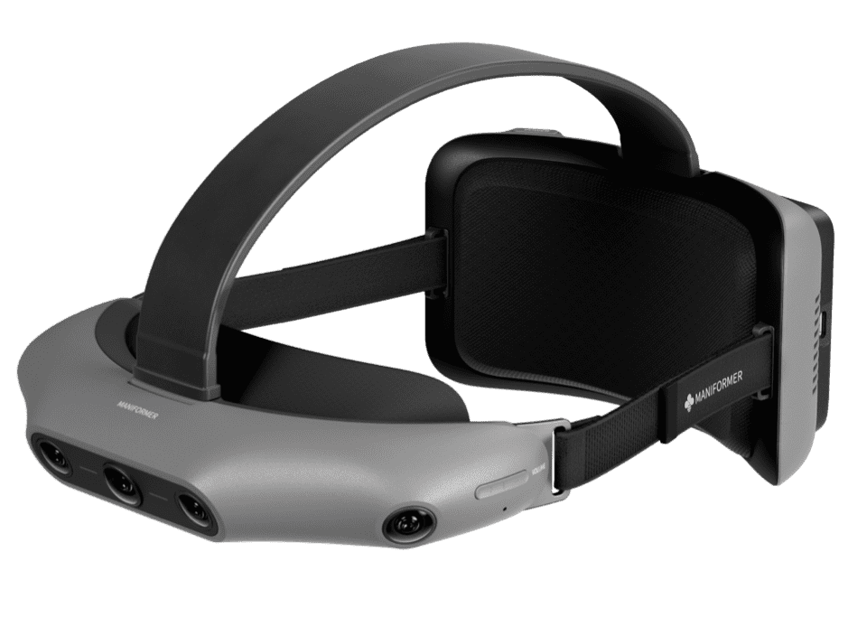

MEgo View
Maniformer MEgo View is a egocentric rig from China.
Sources retrieved: (A, B)
- Indicative price
- Not stated

Manufacturer's rendering.
Specifications
4 of 9 stated 5 not stated
5 fields hidden
How to read the figuresShow guideClose
- not statedNo source
- noyesStated by a source
- 0Reported as zero
- ASource
- A*Source with a caveat (select it)
- CERecords only what the manufacturer states regarding CE marking.
Select a source marker for source details and notes.
Physical0/1 disclosed
WeightNot stated
Sensing and connectivity3/3 disclosed
CamerasHead: 3x fisheye, 1x stereo; wrist: 2x wide-angle (2M @ 60fps, global shutter)
Source and note: CamerasA maniformer.ai/en/mego · Retrieved
Sensing principleMulti-camera RGB + depth + 9-axis IMU
Source and note: Sensing principleA maniformer.ai/en/mego · Retrieved
CommunicationWi-Fi 6 USB 3.0
Source and note: CommunicationA maniformer.ai/en/mego · Retrieved
Commercial0/1 disclosed
Indicative priceNot stated
Compliance & certifications1/4 disclosed
CENot stated
FCCYes
Source and note: FCCB maniformer.ai/en/support/mego-view-en-yornfd · Retrieved Note. User manual compliance notice states the device complies with Part 15 of the FCC Rules.
ULNot stated
CCCNot stated
Notes
Maniformer describes MEgo View as a dual-perspective data acquisition device combining a head-mounted 300+ deg panoramic fisheye camera and a wrist-mounted close-up camera, sold as a standalone product in the MEgo series for embodied AI training.
Sources
One line per source, not per figure: a source has one retrieval date.
- Amaniformer.ai/en/megoMain source. Retrieved
- Bmaniformer.ai/en/support/mego-view-en-yornfdSecondary. Retrieved